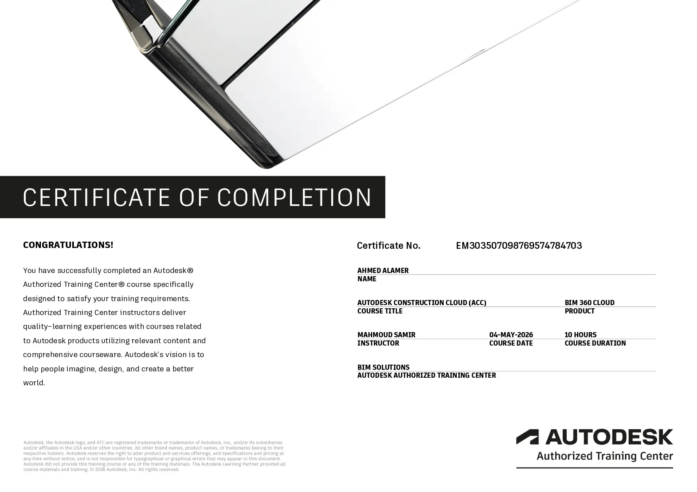
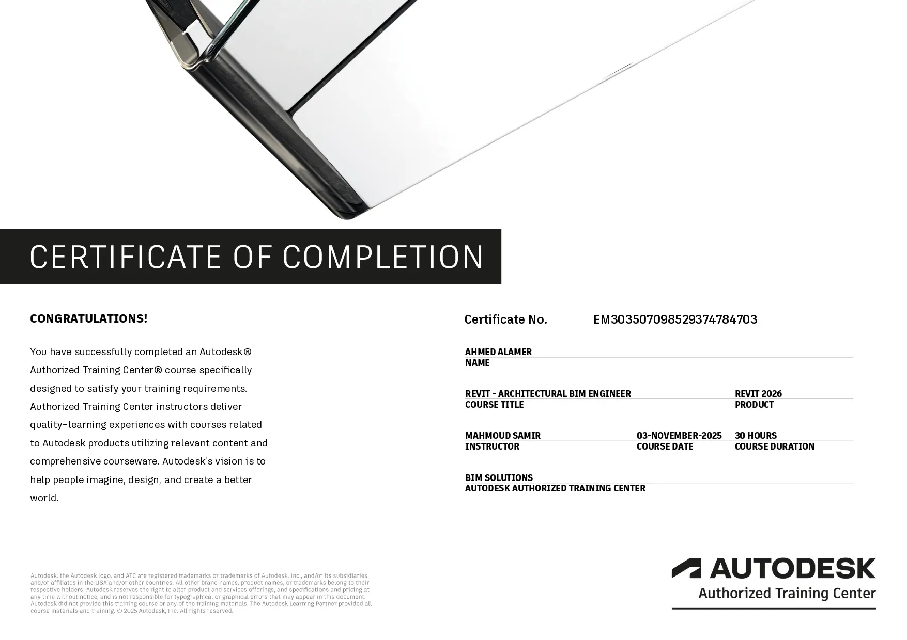
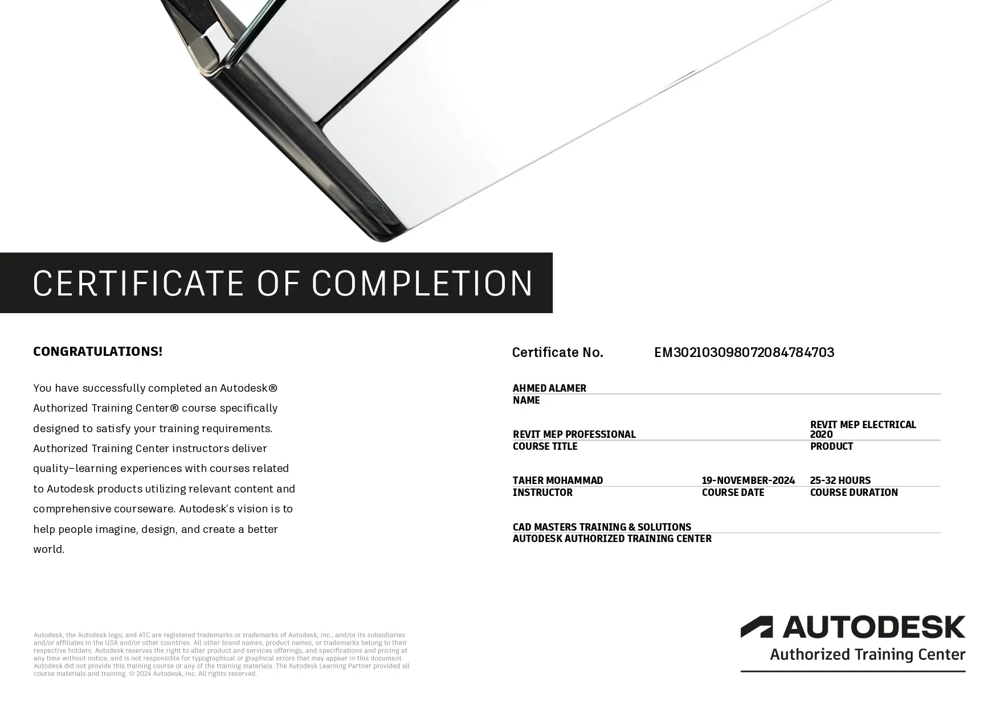
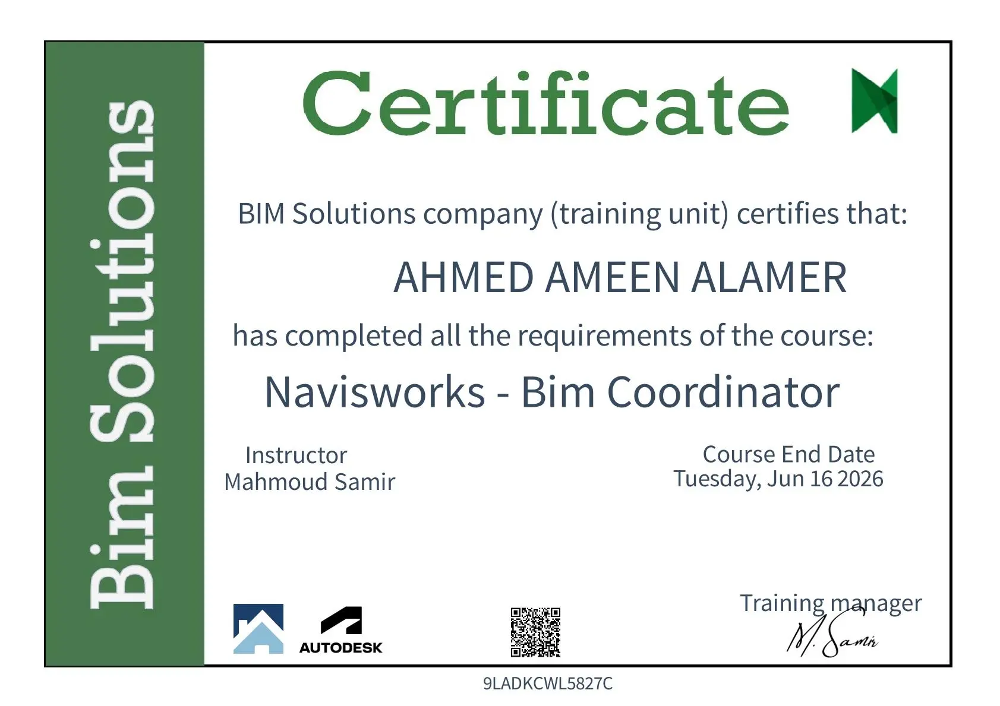
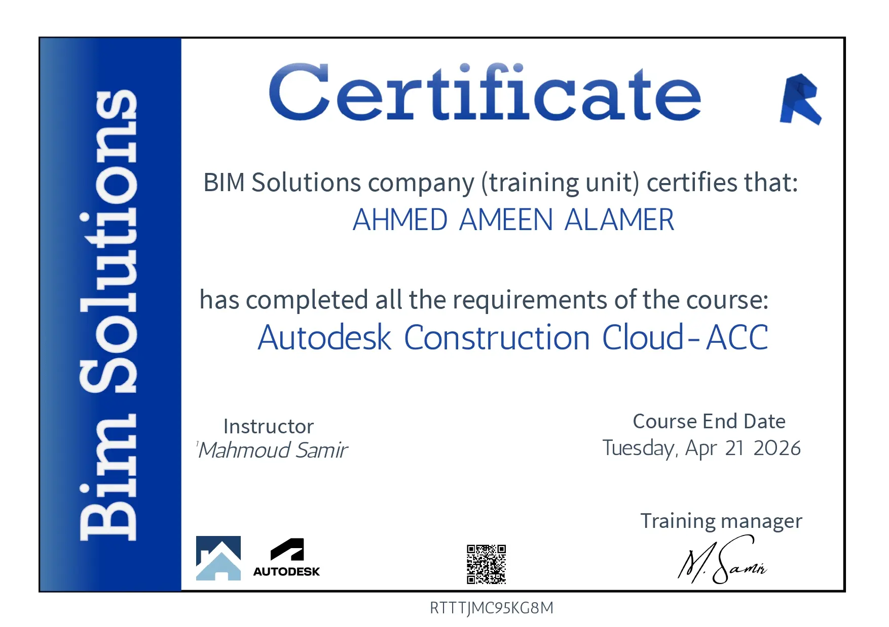
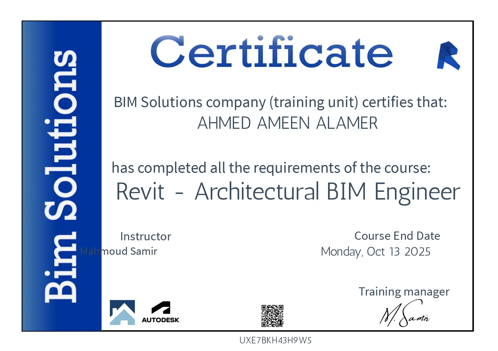
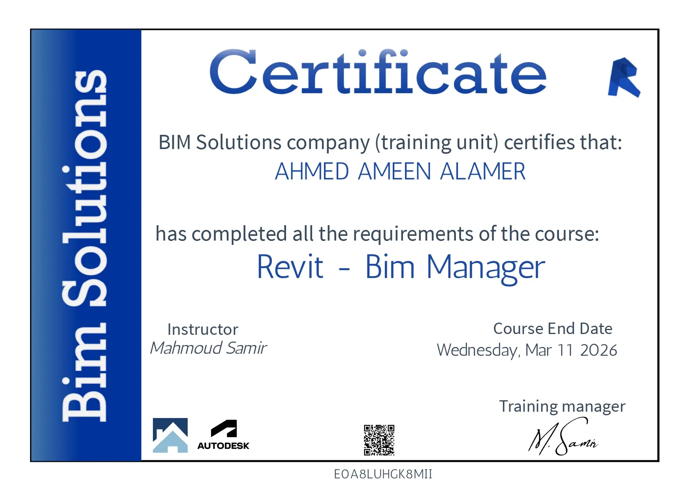
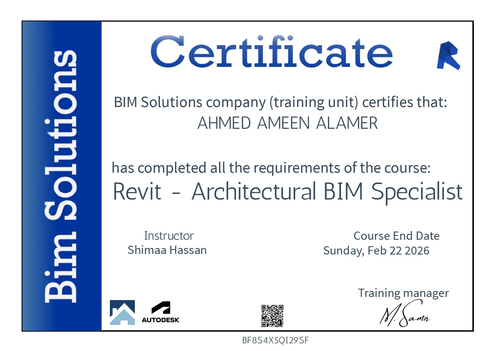
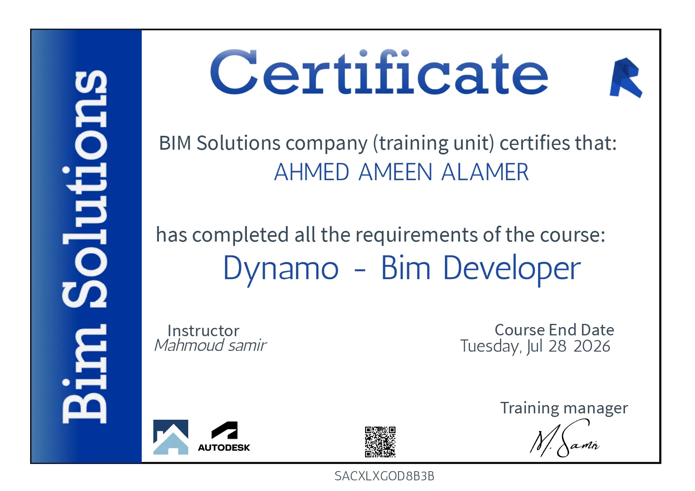

Verified professional development
Professional
certificates.
A curated record of continued learning across BIM authoring, coordination, automation, cloud delivery, and Saudi Building Code practice.
19Certificates
04Categories
01
6 certificatesAutodesk Training Center

Autodesk Authorized Training Center
Autodesk Construction Cloud
Inspect certificate ↗
Autodesk Authorized Training Center
Revit — Architectural BIM Engineer
Inspect certificate ↗Autodesk Authorized Training Center
Revit — Architectural BIM Manager
Inspect certificate ↗Autodesk Authorized Training Center
Revit — Architectural BIM Specialist
Inspect certificate ↗Autodesk Authorized Training Center
Revit Architecture — Families
Inspect certificate ↗
Autodesk Authorized Training Center
Revit MEP — Electrical
Inspect certificate ↗02
7 certificatesBIM Solutions

BIM Solutions Training
Navisworks — BIM Coordinator
Inspect certificate ↗
BIM Solutions Training
Autodesk Construction Cloud
Inspect certificate ↗
BIM Solutions Training
Revit — Architectural BIM Engineer
Inspect certificate ↗
BIM Solutions Training
Revit — Architectural BIM Manager
Inspect certificate ↗
BIM Solutions Training
Revit — Architectural BIM Specialist
Inspect certificate ↗BIM Solutions Training
Revit Architectural — Families
Inspect certificate ↗
BIM Solutions Training
Dynamo — BIM Developer
Inspect certificate ↗03
3 certificatesRevizto
04
3 certificates